Recursion relations for the Schwarzschild metric form factors computed in the paper
Schwarzschild metric from Scattering Amplitudes to all orders
in GN
ArXiv: 2405.14421
Autors: Stavros Mougiakakos and Pierre Vanhove
The files are one the github repository https://github.com/pierrevanhove/Metric
This file gives the recursion relations between the form factors 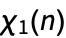, ..., 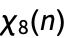 at n-1-loop in D=d+1 dimensions
The initial conditions are the tree-level n=1 and one-loop n=2 coefficients
The initial condition is set the tree-level contribution
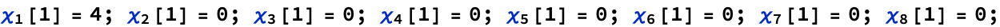
At one-loop order one can directly extract the coefficients in D=d+1 dimensions
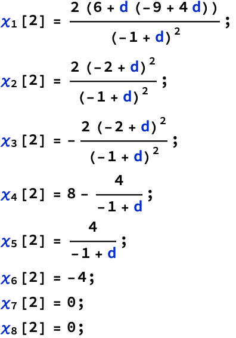
The recursion is valid from n>=3

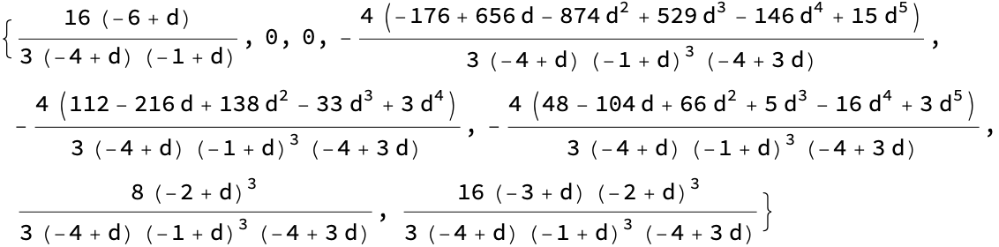
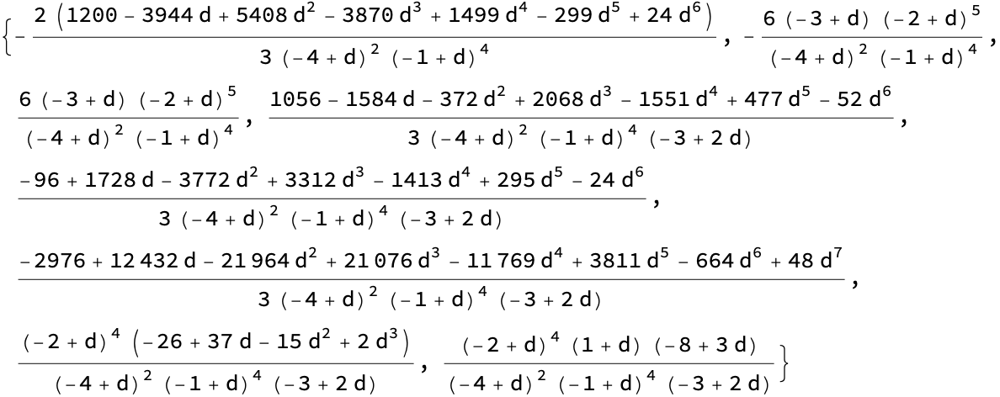
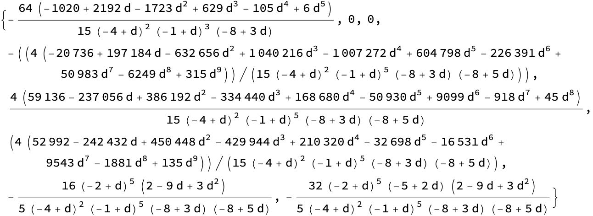
Solution of the recursion relation in general dimension until n=90
The expressions are large

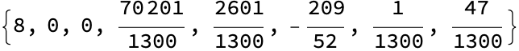
The partial general solution for n>=3 for d=3+ε
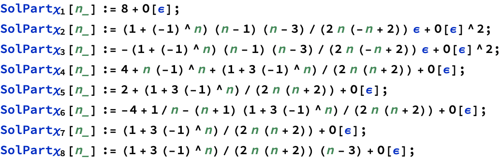
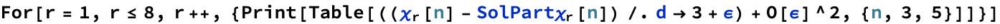
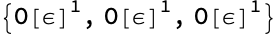
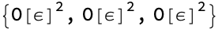


The metric solution with ρ=G M/r and D=d+1
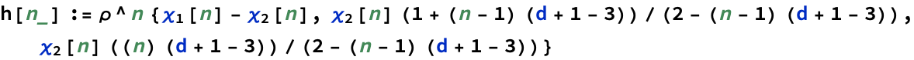
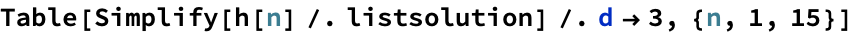
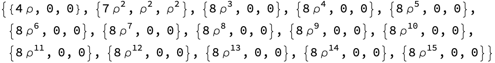